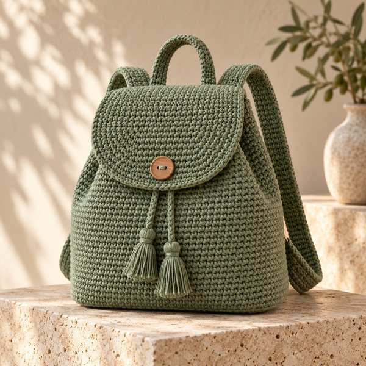
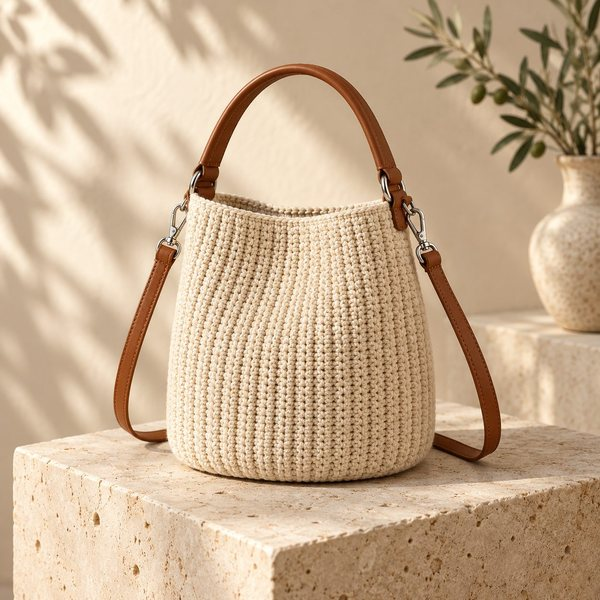

✓Bonus gratuiti del libro
Borse all'uncinetto, senza errori.
Qui trovi tutto quello che accompagna il libro: il kit da stampare, i video dei punti base e 300 idee per la tua prossima borsa.
GratisNessuna registrazionePensato per principianti



8progetti del libro
da cui partire
da cui partire